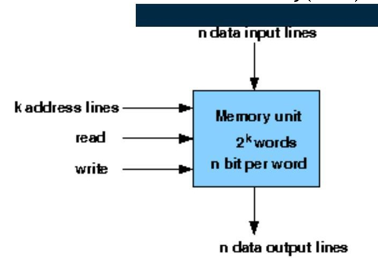
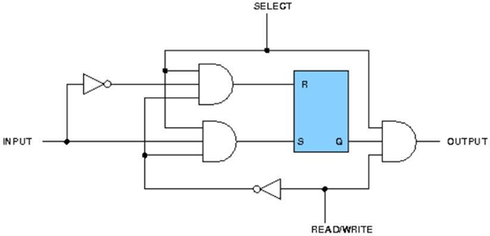
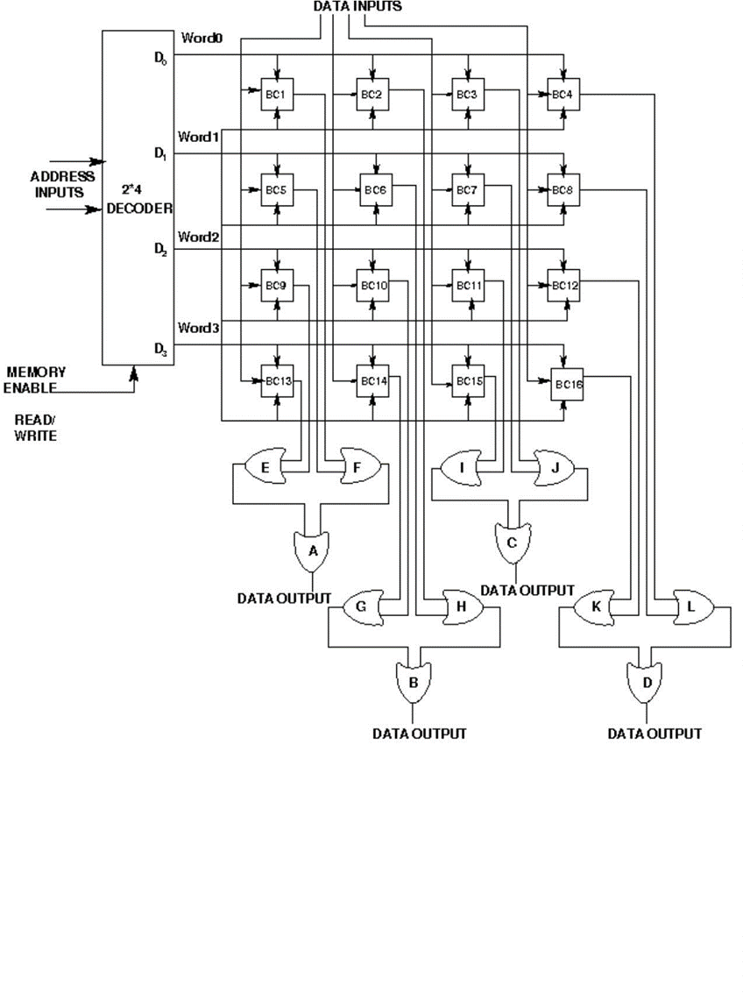

Design & simulate single bit RAM cell OR 4 address * 2bit memory using 8 single bit RAM cells.
| Sr.No. | COMPONENT | SPECIFICATION |
|---|---|---|
| 1. | Software Used | Virtual Lab Simulator |
Design of Memory:
A memory unit is a collection of storage cells together with associated circuits needed to transform insformation in and out of the device. Memory cells which can be accessed for information transfer to or from any desired random location is called random access memory(RAM). The block diagram of a memory unit-

Internal Construction: The internal construction of a random-access memory of m words with n bits per word consists of m*n binary storage cells and associated decoding circuits for selecting individual words. The binary cell is the basic building block of a memory unit.
Design of a RAM cell:
The binary cell has three inputs and one output. The select input enables the cell for reading or writing and the reda/write input determines the cell operation when it is selected. A 1 in the read/write input provides the read operation by forming a path from the flip-flop to the output terminal. A 0 in the read/write input provides the write operation by forming a path from the input terminal to the flip-flop. the logic diagram is-

Objective:
Objective of memory design(single bit RAM cell):
1. understanding behaviour of memory from working module and the module designed by the student as part of the experiment
2. Designing an arithmetic logic unit for given parameter
Examining behaviour of arithmetic logic unit for the working module and module designed by the student as part of the experiment (refer to the circuit diagram):
Loading data in the arithmetic logic unit (refer to procedure tab for further detail and experiment manual for pin numbers):
initialization (refer to experiment manual for pin numbers):
- select=1
- R/W'=0
Loading data in the memory (refer to procedure tab for further detail and experiment manual for pin numbers):
- input(i/p)=1
1) examining the read behaviour:
initialization (refer to experiment manual for pin numbers):
- select=1
- R/W'=1
check output:
- output(o/p)=1
- it will give the value which was previously written
Recommended learning activities for the experiment: Leaning activities are designed in two stages, a basic stage and an advanced stage. Accomplishment of each stage can be self-evaluated through the given set of quiz questions consisting of multiple type and subjective type questions. In the basic stage, it is recommended to perform the experiment firstly, on the given encapsulated working module, secondly, on the module designed by the student, having gone through the theory, objective and procuder. By performing the experiment on the working module, students can only observe the input-output behavior. Where as, performing experiments on the designed module, students can do circuit analysis, error analysis in addition with the input-output behavior. It is recommended to perform the experiments following the given guideline to check behavior and test plans along with their own circuit analysis. Then students are recommended to move on to the advanced stage. The advanced stage includes the accomplishment of the given assignments which will provide deeper understanding of the topic with innovative circuit design experience. At any time, students can mature their knowledge base by further reading the references provided for the experiment.
- color configuration of wire for 5 valued logic supported by the simulator:
- if value is UNKNOWN, wire color= maroon
- if value is TRUE, wire color= blue
- if value is FALSE, wire color= black
- if value is HI IMPEDENCE, wire color= green
- if value is INVALID, wire color= orange
Test plan:
1. Do some read operation by properly setting the R/W', memory enable then give input and check the output.
2. Do some write operation by properly setting the R/W', memory enable then give input and check the output.
3. Do some read operation without setting the memory enable but properly setting the R/W' then give input and check the output.
Design of Memory:
To see the step by step process to perform the experiment in simulator follow
Procedure to perform the experiment: Design of 4X3 RAM Memory
1. Start the simulator as directed.This simulator supports 5-valued logic.
2. To design the circuit we need 12 binary RAM cell, 9 OR gate, 7 bit switch (to give input,which will toggle its value with a double click), 3 bit display (to see the output), wires.
3. The pin configuration of a component is shown whenever the mouse is hovered on any canned component of the palette or press the 'show pinconfig' button. Pin numbering starts from 1 and from the bottom left corner (indicated with the circle) and increases anticlockwise.
4. For a binary RAM cell input is in pin-5, output is in pin-4 and select is pin-8, Read/Write is in pin-6, for read operation give 1 input to Read/Write pin. For write operation give 0 input to Read/Write pin.
5. For a 'decoder with enable', input A is in pin-6, B is in pin-5, output D0 is in pin-4, D1 is in pin-3, D2 is in pin-2, D3 is in pin-1 and Enable is in pin-8
6. Click on the 'decoder with enable' component (in the Other Components drawer in the pallet) and then click on the position of the editor window where you want to add the component (no drag and drop, simple click will serve the purpose), likewise add 12 binary RAM cell (from the Other Components drawer in the pallet), 9 OR gates (from Logic Gates drawer in the pallete), 7 bit switches (which will toggle its value with a double click), 3 bit displays (from Display and Input drawer of the pallet,if it is not seen scroll down in the drawer)
7. To connect any two components select the Connection menu of Palette, and then click on the Source terminal and click on the target terminal. According to the circuit diagram connect all the components, connect 2 bit switches to the inputs of the 'decoder with enable' (which will act as address input), 1 bit switch to the enable pin of the 'decoder with enable' (which will act as memory enable input), connect a bit switch to the Read/Write(R/W') line, 3 bit switches to the data inputs line, 3 bit displays to the data output line and OR gates according to the diagram shown in the circuit diagram. after athe connection is over click the selection tool in the pallete.
8. To see the circuit working, Do some read or write operation by properly setting the R/W', memory enable then give input and check the output. suppose you give, R/W'=1, memory enable=1, address input=01, data input=101, then it will be a read operation and you will not see 101 as output, it will store 101 in the word-1. now again set, R/W'=0, memory enable=1, address input=01, then it will be a write operation and you will see 101 as the content of word-1 on the output display.
Circuit diagram of 4X3 RAM memory:

Components:
For Designing a RAM Cell
To build a RAM Cell, we need :
1. AND Gate(2 input)-6
2. NOT Gate-2
3. RS Flip Flop-1
For Designing a 4X3 RAM
To build a 4X3 RAM, we need :
1. OR Gate(2 input)-11
2. RAM Cell-12
3. 2X4 Decoder with Enable-1
Follow the below steps
1. Connections were given as per circuit diagram.2. Logical inputs were given as per truth table.
3. Observe the logical output and verify with the truth tables.
Here you can embed an interactive simulation tool or provide links to simulation resources.
- Reference 1: “Digital Fundamentals” by Floyd & Jain
- Reference 2: R. P. Jain, “Modern Digital Electronics”, 3rd Edition, Tata McGraw-Hill
- Reference 3: 3. Malvino, D.Leach“Digital Principles and Applications”, 5th edition, Tata McGraw- Hill